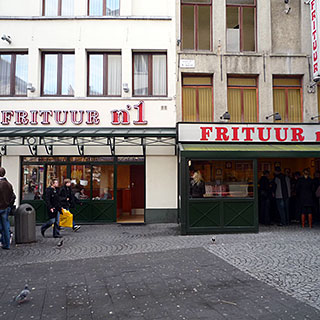

Frituur No. 1

Hoogstraat 1, Antwerp, 2000, Belgium 51.21997, 4.39996
The best chips and sauces in town, perfect for a late-night meal
Frituur No 1, Belgian fast-food at its best, is perhaps the definitive Antwerp eating experience. This snack bar is all about the chips (fries, friet, frites, whatever…) and the long menu of possible sauces, with mayonnaise on top, of course. Not only does this place have a convenient city-centre location, long opening hours, and an encouraging queue of customers, but the chips are actually excellent.
To get the full experience, and to enjoy your chips the most, we recommend skipping dinner, drinking local beer all evening at Kulminator, say, and then heading over to Frituur No 1 after midnight. Since you will now be subject to both beer munchies and actual hunger, you need a substantial topping on your chips. We recommend the beef stew gravy (stoofvleessaus), which you can upgrade to actual stew (stoofvlees). If you want to go all-out, you can even get a large portion, although that is rarely required, because ‘small’ is decidedly relative in this context.
There is some seating inside, but the most sociable option is to stand outside, even in winter, and enjoy your food at one of the standing tables in the enclosure around the counter where you get at least some shelter from the weather.